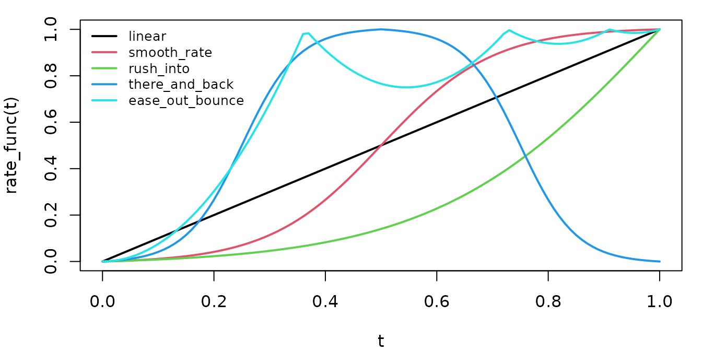

An animation changes one or more mobjects over time. This vignette
starts with the two ways to make animations (self$play()
with an animation object, and the $animate builder), then
walks through every family of animations that manimR provides, and ends
with the tools for building your own: composition, speed changes, rate
functions, path functions, class defaults, overrides and custom R6
animation classes.
Each example is a short scene. On the package website the scenes play as videos; in the installed vignette you see the last frame of each one.
Playing animations
A scene is an R6 class that inherits from Scene and
defines construct(). Inside construct(),
self$play() runs one or more animations at the same time
and self$wait() holds the current frame.
self$add() and self$remove() change what is on
screen instantly, without an animation.
PlayBasics <- R6::R6Class("PlayBasics", inherit = Scene,
public = list(construct = function() {
square <- Square(color = BLUE)$shift(LEFT * 3)
circle <- Circle(color = RED)$shift(RIGHT * 3)
note <- Text("added without animation", font_size = 28)$to_edge(UP)
self$add(square, note)
self$play(Create(circle), run_time = 1.5, rate_func = linear)
self$remove(note)
self$play(square$animate$shift(RIGHT * 1.5), circle$animate$shift(LEFT * 1.5))
self$wait(0.5)
})
)Named arguments of self$play() apply to every animation
in the call:
-
run_time: duration in seconds (most animations default to 1). -
rate_func: a function mapping the elapsed fraction of time, from 0 to 1, to the fraction of the animation done. The default for most animations issmooth_rate, which starts and ends slowly. See Rate functions. -
lag_ratio: how much the submobjects of a group are staggered. With 0 (the default for most animations) they all move together; with 1 each starts when the previous one ends; values in between overlap.
Several animations in one self$play() call start
together, and the call lasts as long as the longest of them. The next
example plays the same FadeIn() on two rows of squares,
once with lag_ratio = 0 and once with
lag_ratio = 0.5.
LagRatio <- R6::R6Class("LagRatio", inherit = Scene,
public = list(construct = function() {
together <- VGroup(lapply(1:6, function(i) Square(side_length = 0.8, color = BLUE, fill_opacity = 0.7)))
together$arrange(RIGHT)$shift(UP * 1.2 + RIGHT)
staggered <- together$copy()$set_color(ORANGE)$shift(DOWN * 2.4)
labels <- VGroup(
Text("lag_ratio = 0", font_size = 28)$next_to(together, LEFT, buff = 0.5),
Text("lag_ratio = 0.5", font_size = 28)$next_to(staggered, LEFT, buff = 0.5)
)
self$add(labels)
self$play(FadeIn(together, shift = UP), FadeIn(staggered, shift = UP, lag_ratio = 0.5), run_time = 2)
self$wait(0.5)
})
)Waiting has three variants:
-
self$wait(duration)holds the frame fordurationseconds (1 by default) while updaters keep running. -
self$pause(duration)holds a frozen frame: updaters do not run, which renders faster. -
self$wait_until(stop_condition, max_time)waits until a function returnsTRUE. It is covered in Updaters and value trackers.
Under the hood every self$wait() plays a
Wait() animation, so self$play(Wait(1)) is the
same as self$wait(1).
The $animate builder
Every mobject has an $animate field. Calling methods on
it records them instead of applying them, and the result is an animation
that morphs the mobject from its current state to the state after those
calls. Methods can be chained, exactly as on the mobject itself.
Animation arguments such as run_time and
rate_func can be given in two places: to
self$play(), or by calling $animate like a
function before the first method, as in
mob$animate(run_time = 2)$shift(RIGHT). This is the R
spelling of upstream manim’s
mob.animate(run_time=2).shift(RIGHT).
AnimateBuilder <- R6::R6Class("AnimateBuilder", inherit = Scene,
public = list(construct = function() {
square <- Square(color = BLUE, fill_opacity = 0.5)
self$add(square)
self$play(square$animate$shift(LEFT * 3)$scale(0.5)$set_color(YELLOW))
self$play(square$animate(run_time = 2, rate_func = linear)$shift(RIGHT * 6))
self$play(square$animate$rotate(PI / 4)$set_fill(RED, opacity = 0.8), run_time = 0.75)
})
)Two details to keep in mind:
- The builder morphs between two snapshots. It does not replay the
method calls frame by frame, so
square$animate$rotate(PI)looks like a flip through the center rather than a turn. UseRotate()for a real rotation. - Two builders on the same mobject in one
self$play()call do not combine; the last one wins. Chain the methods in a single builder instead.
By default every point travels in a straight line. The
path_arc argument makes points travel along an arc of that
angle instead; positive angles bend counterclockwise.
AnimatePathArc <- R6::R6Class("AnimatePathArc", inherit = Scene,
public = list(construct = function() {
straight_path_line <- Line(LEFT * 4 + UP, RIGHT * 4 + UP, color = GREY, stroke_width = 2)
arc_path_line <- ArcBetweenPoints(LEFT * 4 + DOWN, RIGHT * 4 + DOWN, angle = PI / 2, color = GREY, stroke_width = 2)
straight <- Dot(LEFT * 4 + UP, radius = 0.15, color = BLUE)
arced <- Dot(LEFT * 4 + DOWN, radius = 0.15, color = ORANGE)
self$add(straight_path_line, arc_path_line, straight, arced)
self$play(straight$animate$shift(RIGHT * 8), arced$animate(path_arc = PI / 2)$shift(RIGHT * 8), run_time = 2)
self$wait(0.3)
})
)self$play() accepts builders and animation objects
alike: it converts builders with prepare_animation(), which
you can also call yourself, for example to inspect or store an animation
before playing it.
builder <- Square()$animate$shift(RIGHT)$scale(2)
builder
#> <animation builder> Square: shift -> scale
anim <- prepare_animation(builder)
anim
#> <MethodAnimation> MethodAnimation(Square)
anim$run_time
#> [1] 1Creation
These animations draw a mobject onto the screen, or remove it the way
it was drawn. The “create” style animations add the mobject to the scene
when they start, so there is no need to call self$add()
first.
-
Create()draws the outline of a VMobject along its path. -
DrawBorderThenFill()draws the outline, then fills it. -
Write()draws each submobject’s border and fill in turn, the classic handwriting effect for text. Its run time and lag ratio default to values based on the number of submobjects;reverse = TRUEwrites from the end.
CreationBasics <- R6::R6Class("CreationBasics", inherit = Scene,
public = list(construct = function() {
circle <- Circle(color = BLUE)$shift(LEFT * 4)
square <- Square(color = GREEN, fill_opacity = 0.6)
word <- Text("Write", color = YELLOW)$shift(RIGHT * 4)
self$play(Create(circle))
self$play(DrawBorderThenFill(square), run_time = 1.5)
self$play(Write(word))
self$wait(0.5)
})
)Uncreate() and Unwrite() run
Create() and Write() backwards and remove the
mobject from the scene when they finish.
UncreateUnwrite <- R6::R6Class("UncreateUnwrite", inherit = Scene,
public = list(construct = function() {
circle <- Circle(color = BLUE)$shift(LEFT * 3)
word <- Text("Unwrite", color = YELLOW)$shift(RIGHT * 3)
note <- Text("Uncreate and Unwrite remove the mobject at the end", font_size = 28)$to_edge(DOWN)
self$add(circle, word, note)
self$wait(0.3)
self$play(Uncreate(circle), Unwrite(word))
self$wait(0.3)
})
)SpiralIn() flies the submobjects of a group in from far
away while spinning them into place. scale_factor sets how
far out they start.
SpiralInExample <- R6::R6Class("SpiralInExample", inherit = Scene,
public = list(construct = function() {
shapes <- VGroup(
Circle(radius = 0.8, color = BLUE, fill_opacity = 0.5)$shift(LEFT * 2.5),
Square(color = GREEN, fill_opacity = 0.5),
Triangle(color = RED, fill_opacity = 0.5)$shift(RIGHT * 2.5)
)
self$play(SpiralIn(shapes, scale_factor = 3), run_time = 2)
self$wait(0.3)
})
)ShowIncreasingSubsets() reveals the submobjects of a
group one after another and keeps them;
ShowSubmobjectsOneByOne() shows only one at a time, so the
last one stays at the end.
Subsets <- R6::R6Class("Subsets", inherit = Scene,
public = list(construct = function() {
top <- VGroup(lapply(1:8, function(i) Dot(radius = 0.2, color = BLUE)))$arrange(RIGHT, buff = 0.5)$shift(UP)
bottom <- top$copy()$set_color(ORANGE)$shift(DOWN * 2)
self$add(
Text("ShowIncreasingSubsets", font_size = 28)$next_to(top, UP),
Text("ShowSubmobjectsOneByOne", font_size = 28)$next_to(bottom, UP)
)
self$play(ShowIncreasingSubsets(top), ShowSubmobjectsOneByOne(bottom), run_time = 2)
self$wait(0.3)
})
)Text has its own creation animations. Each glyph of a
Text() is a submobject, so
AddTextLetterByLetter() shows it one letter at a time
(time_per_char seconds per letter) and
RemoveTextLetterByLetter() removes it the same way.
AddTextWordByWord() takes a group whose submobjects are
words, here a VGroup of Text() objects.
LetterByLetter <- R6::R6Class("LetterByLetter", inherit = Scene,
public = list(construct = function() {
first <- Text("AddTextLetterByLetter", font_size = 40)$shift(UP * 1.5)
second <- Text("RemoveTextLetterByLetter", font_size = 40)
words <- VGroup(lapply(c("one", "word", "at", "a", "time"), Text, font_size = 40))
words$arrange(RIGHT, aligned_edge = DOWN)$shift(DOWN * 1.5)
self$play(AddTextLetterByLetter(first, time_per_char = 0.05))
self$add(second)
self$play(RemoveTextLetterByLetter(second, time_per_char = 0.05))
self$play(AddTextWordByWord(words))
self$wait(0.5)
})
)TypeWithCursor() types a text while a cursor mobject
moves along it, and UntypeWithCursor() deletes it again.
Blink() (an indication animation) makes the cursor blink in
between.
Typing <- R6::R6Class("Typing", inherit = Scene,
public = list(construct = function() {
text <- Text("Typing", color = PURPLE)$scale(1.5)$to_edge(LEFT)
cursor <- Rectangle(color = GREY_A, fill_color = GREY_A, fill_opacity = 1, height = 1.1, width = 0.5)
cursor$move_to(text[1])
self$play(TypeWithCursor(text, cursor))
self$play(Blink(cursor, blinks = 2, time_on = 0.25, time_off = 0.25))
self$play(UntypeWithCursor(text, cursor))
done <- Text("Done", color = YELLOW)$scale(1.5)$to_edge(LEFT)
self$play(TypeWithCursor(done, cursor))
self$wait(0.5)
})
)ShowPartial is the base class of Create()
and ShowPassingFlash(): at each moment it shows the part of
the path between two proportions returned by its
get_bounds(alpha) method. Subclass
ShowPartialClass to define a new way of revealing a path.
This one grows the path from its middle outward; the circle’s middle is
its leftmost point because circles start at the right.
ShowFromMiddle <- R6::R6Class("ShowFromMiddle", inherit = ShowPartialClass,
public = list(
initialize = function(mobject, ...) super$initialize(mobject, introducer = TRUE, ...),
get_bounds = function(alpha) c(0.5 - alpha / 2, 0.5 + alpha / 2)
)
)
ShowPartialExample <- R6::R6Class("ShowPartialExample", inherit = Scene,
public = list(construct = function() {
line <- Line(LEFT * 5, RIGHT * 5, color = TEAL)$shift(UP * 2)
circle <- Circle(radius = 1.5, color = YELLOW)$shift(DOWN * 0.8)
self$play(ShowFromMiddle$new(line), ShowFromMiddle$new(circle), run_time = 2)
self$wait(0.3)
})
)Fading
FadeIn() and FadeOut() change the opacity,
optionally combined with a movement or a scale change:
-
shift: a vector to move along while fading (in from-shiftforFadeIn(), out towardshiftforFadeOut()). -
target_position: a point or mobject to fade from (FadeIn()) or to (FadeOut()). -
scale: the scale of the invisible state, soFadeIn(m, scale = 0.2)grows while appearing.
Both accept several mobjects at once, as in
FadeOut(a, b, c).
Fading <- R6::R6Class("Fading", inherit = Scene,
public = list(construct = function() {
square <- Square(color = BLUE, fill_opacity = 0.5)$shift(LEFT * 4)
circle <- Circle(color = GREEN, fill_opacity = 0.5)
triangle <- Triangle(color = YELLOW, fill_opacity = 0.5)$shift(RIGHT * 4)
self$play(FadeIn(square, shift = DOWN), FadeIn(circle, scale = 0.2), FadeIn(triangle, target_position = ORIGIN))
self$play(FadeOut(square, shift = DOWN), FadeOut(triangle, target_position = circle, scale = 0.5))
self$play(FadeIn(Text("FadeIn and FadeOut", font_size = 36)$to_edge(UP), shift = DOWN))
self$wait(0.3)
})
)Growing
Growing animations scale a mobject up from nothing:
-
GrowFromPoint(mobject, point)from any point (or the center of a mobject). -
GrowFromCenter(mobject)from its own center. -
GrowFromEdge(mobject, edge)from one of its edges, such asDOWN. -
GrowArrow(arrow)from the start of an arrow, keeping the tip in shape. -
SpinInFromNothing(mobject, angle)grows while spinning byangle.
point_color sets the color the mobject starts with.
Growing <- R6::R6Class("Growing", inherit = Scene,
public = list(construct = function() {
shapes <- list(
Square(side_length = 1.6, color = BLUE, fill_opacity = 0.5),
Circle(radius = 0.8, color = GREEN, fill_opacity = 0.5),
Rectangle(width = 1, height = 1.8, color = RED, fill_opacity = 0.5),
Arrow(LEFT, RIGHT, color = YELLOW),
Star(outer_radius = 0.9, color = PURPLE, fill_opacity = 0.5)
)
titles <- c("GrowFromPoint", "GrowFromCenter", "GrowFromEdge", "GrowArrow", "SpinInFromNothing")
xs <- c(-5.4, -2.7, 0, 2.7, 5.4)
for (i in seq_along(shapes)) {
shapes[[i]]$move_to(RIGHT * xs[i] + UP * 0.5)
self$add(Text(titles[i], font_size = 20)$move_to(RIGHT * xs[i] + DOWN * 1.2))
}
self$play(
GrowFromPoint(shapes[[1]], ORIGIN),
GrowFromCenter(shapes[[2]]),
GrowFromEdge(shapes[[3]], DOWN),
GrowArrow(shapes[[4]]),
SpinInFromNothing(shapes[[5]], point_color = WHITE),
run_time = 1.5
)
self$wait(0.5)
})
)Indication
Indication animations draw attention to something without changing it
for good. They are listed in ?indication.
-
Indicate()briefly scales a mobject up and colors it (scale_factor,color). -
Circumscribe()runs a frame around it, a rectangle by default or a circle withshape = "circle";fade_inandfade_outfade the frame instead of drawing it. -
Wiggle()shakes it (scale_value,rotation_angle,n_wiggles). -
ApplyWave()sends a wave through it (direction,amplitude,ripples).
IndicationText <- R6::R6Class("IndicationText", inherit = Scene,
public = list(construct = function() {
words <- VGroup(lapply(c("Indicate", "Circumscribe", "Wiggle", "ApplyWave"), Text, font_size = 40))
words$arrange(DOWN, buff = 0.5)
self$add(words)
self$play(Indicate(words[1]))
self$play(Circumscribe(words[2]))
self$play(Circumscribe(words[2], shape = "circle", fade_out = TRUE, color = BLUE))
self$play(Wiggle(words[3], run_time = 1))
self$play(ApplyWave(words[4], run_time = 1))
self$wait(0.3)
})
)The second group works on points and paths:
-
Flash()sends short lines out from a point (num_lines,flash_radius,line_length). -
FocusOn()shrinks a large translucent spotlight onto a point. -
ShowPassingFlash()shows only a short piece of a path (time_width, a fraction of the path) traveling along it, and removes it at the end. -
ShowPassingFlashWithThinningStrokeWidth()does the same with a tail that gets thinner. -
Blink()switches the opacity of a mobject off and on (blinks,time_on,time_off,hide_at_end).
IndicationPoints <- R6::R6Class("IndicationPoints", inherit = Scene,
public = list(construct = function() {
dot <- Dot(LEFT * 3, radius = 0.15, color = YELLOW)
ring <- Circle(radius = 1.2, color = BLUE)$shift(RIGHT * 3)
self$add(dot, ring)
self$play(Flash(dot, flash_radius = 0.3, num_lines = 10))
self$play(FocusOn(dot, run_time = 1))
self$play(ShowPassingFlash(ring$copy()$set_color(YELLOW), time_width = 0.3))
self$play(ShowPassingFlashWithThinningStrokeWidth(ring$copy()$set_stroke(YELLOW, width = 10), time_width = 0.4))
self$play(Blink(dot, blinks = 2, time_on = 0.2, time_off = 0.2))
self$wait(0.3)
})
)Movement
A homotopy is a function of a point and time.
Homotopy(homotopy, mobject) takes a function
function(x, y, z, t) that returns the new point, and
applies it to every point of the mobject for t going from 0
to 1. SmoothedVectorizedHomotopy() does the same but
smooths the curves after each step, so corners round off. A homotopy
moves the existing points only, so give shapes with few points more of
them first with insert_n_curves().
HomotopyExample <- R6::R6Class("HomotopyExample", inherit = Scene,
public = list(construct = function() {
wave <- function(x, y, z, t) c(x, y + 0.35 * t * sin(3 * x), z)
word <- Text("Homotopy", font_size = 72)$shift(UP * 1.5)
plain <- Square(side_length = 2, color = BLUE)$insert_n_curves(12)$shift(LEFT * 3 + DOWN * 1.5)
smoothed <- plain$copy()$set_color(ORANGE)$shift(RIGHT * 6)
self$add(word, plain, smoothed)
self$play(Homotopy(wave, word), Homotopy(wave, plain), SmoothedVectorizedHomotopy(wave, smoothed), run_time = 2)
self$wait(0.3)
})
)ComplexHomotopy() is the same with a function
function(z, t) of a complex number z = x + iy.
PhaseFlow() moves every point along a vector field
function(p) for virtual_time units of time.
Both work in scene coordinates, so the homotopy below squares each point
relative to the center of the square rather than relative to the origin.
The flow on the right is a shear: points move sideways in proportion to
their height.
FlowExample <- R6::R6Class("FlowExample", inherit = Scene,
public = list(construct = function() {
center <- -3.5 + 0i
square <- Square(side_length = 2.4, color = BLUE)$insert_n_curves(16)$move_to(c(Re(center), Im(center), 0))
# Squares each point relative to the center of the square, blended in as t grows.
squaring <- function(z, t) {
w <- z - center
center + (1 - t) * w + t * w^2 / 2
}
grid <- VGroup(lapply(1:16, function(i) Square(side_length = 0.6, color = YELLOW)))
grid$arrange_in_grid(4, 4, buff = 0)$shift(RIGHT * 3)
shear <- function(p) c(0.6 * p[2], 0, 0)
self$add(square, grid)
self$play(ComplexHomotopy(squaring, square), PhaseFlow(shear, grid, virtual_time = 1), run_time = 2)
self$wait(0.3)
})
)MoveAlongPath(mobject, path) moves a mobject so that its
center follows a path.
MoveAlongPathExample <- R6::R6Class("MoveAlongPathExample", inherit = Scene,
public = list(construct = function() {
path <- FunctionGraph(function(x) 1.5 * sin(x), x_range = c(-5, 5), color = GREY)
dot <- Dot(path$point_from_proportion(0), radius = 0.15, color = YELLOW)
self$add(path, dot)
self$play(MoveAlongPath(dot, path), run_time = 2, rate_func = linear)
self$wait(0.3)
})
)Rotation
Rotate(mobject, angle) turns a mobject by
angle radians around its center, or around
about_point; points travel along circles, so even a full
turn (angle = TAU) is visible. Rotating()
spins a mobject continuously at a constant speed
(rate_func = linear by default) and is handy for many
turns; its default run time is 5 seconds.
RotationExample <- R6::R6Class("RotationExample", inherit = Scene,
public = list(construct = function() {
square <- Square(color = BLUE, fill_opacity = 0.5)$shift(LEFT * 4)
bar <- Rectangle(width = 2, height = 0.3, color = GREEN, fill_opacity = 0.8)
sun <- Dot(RIGHT * 4, radius = 0.3, color = YELLOW)
planet <- Dot(RIGHT * 4 + UP * 1.5, radius = 0.15, color = TEAL)
self$add(square, bar, sun, planet)
self$play(
Rotate(square, angle = PI / 4),
Rotate(bar, angle = PI / 2, about_point = bar$get_left()),
Rotating(planet, angle = PI, about_point = RIGHT * 4, run_time = 2)
)
self$wait(0.3)
})
)Transforms
Transform(a, b) morphs a into the shape and
style of b. Two related animations differ in what is on
screen afterwards:
- After
Transform(a, b), the mobject on screen is stilla(it now looks likeb);bitself was never added. Keep working witha. - After
ReplacementTransform(a, b),ais gone andbis on screen. Keep working withb.
TransformVsReplacement <- R6::R6Class("TransformVsReplacement", inherit = Scene,
public = list(construct = function() {
left_square <- Square(color = BLUE)$shift(LEFT * 3)
left_circle <- Circle(color = BLUE)$shift(LEFT * 3)
right_square <- Square(color = ORANGE)$shift(RIGHT * 3)
right_circle <- Circle(color = ORANGE)$shift(RIGHT * 3)
self$add(
Text("Transform", font_size = 28)$move_to(LEFT * 3 + DOWN * 2),
Text("ReplacementTransform", font_size = 28)$move_to(RIGHT * 3 + DOWN * 2),
left_square, right_square
)
self$play(Transform(left_square, left_circle), ReplacementTransform(right_square, right_circle))
# Animate the mobject that is on screen now.
self$play(left_square$animate$set_fill(BLUE, opacity = 0.6), right_circle$animate$set_fill(ORANGE, opacity = 0.6))
self$wait(0.3)
})
)TransformFromCopy(a, b) leaves a in place
and morphs a copy of it into b.
ClockwiseTransform() and
CounterclockwiseTransform() are Transform()
with points moving along half circles (path_arc = -pi and
path_arc = pi).
TransformCopyArcs <- R6::R6Class("TransformCopyArcs", inherit = Scene,
public = list(construct = function() {
source <- Square(side_length = 1, color = BLUE, fill_opacity = 0.5)$shift(LEFT * 4 + UP * 2.5)
target <- Circle(radius = 0.6, color = GREEN, fill_opacity = 0.5)$shift(RIGHT * 4 + UP * 2.5)
self$add(source)
self$play(TransformFromCopy(source, target))
a <- Triangle(color = RED)$scale(0.5)$shift(LEFT * 2 + DOWN * 2)
b <- Square(side_length = 0.8, color = RED)$shift(RIGHT * 2 + DOWN * 2)
self$add(a)
self$play(ClockwiseTransform(a, b))
c_shape <- Star(outer_radius = 0.5, color = YELLOW)$shift(RIGHT * 2 + UP * 0.5)
d_shape <- Circle(radius = 0.4, color = YELLOW)$shift(LEFT * 2 + UP * 0.5)
self$add(c_shape)
self$play(CounterclockwiseTransform(c_shape, d_shape))
self$wait(0.3)
})
)Targets, methods and saved states
MoveToTarget() works with
generate_target(): the method stores a copy of the mobject
in mob$target, you change that copy freely, and
MoveToTarget(mob) morphs the mobject into it.
ApplyMethod() takes a method of a mobject (written without
calling it, as circle$shift) and its arguments, which is
what circle$animate$shift(...) does for you.
save_state() stores a copy of a mobject and
Restore() morphs back to it.
FadeToColor(), ScaleInPlace() and
ShrinkToCenter() are shortcuts for recoloring, scaling
about the center, and scaling to nothing.
TargetsAndMethods <- R6::R6Class("TargetsAndMethods", inherit = Scene,
public = list(construct = function() {
circle <- Circle(color = BLUE)$shift(LEFT * 4)
circle$save_state()
circle$generate_target()
circle$target$shift(RIGHT * 2)$scale(0.5)$set_color(YELLOW)
square <- Square(color = GREEN)$shift(RIGHT * 1.5)
triangle <- Triangle(color = PURPLE)$shift(RIGHT * 4.5)
self$add(circle, square, triangle)
self$play(MoveToTarget(circle))
self$play(ApplyMethod(circle$shift, UP * 1.5))
self$play(Restore(circle))
self$play(FadeToColor(square, RED), ShrinkToCenter(triangle))
self$play(ScaleInPlace(square, 0.5))
self$wait(0.3)
})
)Applying functions
These animations compute the target by applying a function:
-
ApplyFunction(fn, mob):fnreceives a copy of the mobject and returns the modified mobject. -
ApplyPointwiseFunction(fn, mob):fnmaps each point (a numeric vectorc(x, y, z)) to a new point. -
ApplyPointwiseFunctionToCenter(fn, mob): moves the whole mobject so that its center goes tofn(center). -
ApplyMatrix(matrix, mob): applies a 2 x 2 or 3 x 3 matrix to every point, aboutabout_point(the origin by default).
ApplyPointwiseFunction() and ApplyMatrix()
default to a run time of 3 seconds.
ApplyFunctions <- R6::R6Class("ApplyFunctions", inherit = Scene,
public = list(construct = function() {
places <- list(LEFT * 3.5 + UP * 1.6, RIGHT * 3.5 + UP * 1.6, LEFT * 3.5 + DOWN * 2, RIGHT * 3.5 + DOWN * 2)
titles <- c("ApplyFunction", "ApplyPointwiseFunction", "ApplyPointwiseFunctionToCenter", "ApplyMatrix")
shapes <- lapply(1:4, function(i) Square(side_length = 1.5, color = BLUE)$insert_n_curves(8)$move_to(places[[i]]))
for (i in 1:4) self$add(shapes[[i]], Text(titles[i], font_size = 24)$next_to(shapes[[i]], UP))
self$play(ApplyFunction(function(m) m$scale(0.6)$rotate(PI / 4)$set_color(YELLOW), shapes[[1]]))
self$play(ApplyPointwiseFunction(function(p) p + c(0, 0.25 * sin(3 * p[1]), 0), shapes[[2]], run_time = 1.5))
self$play(ApplyPointwiseFunctionToCenter(function(p) p + RIGHT * 1.5, shapes[[3]]))
shear <- matrix(c(1, 0, 1, 1), nrow = 2)
self$play(ApplyMatrix(shear, shapes[[4]], about_point = shapes[[4]]$get_center(), run_time = 1.5))
self$wait(0.3)
})
)ApplyComplexFunction(fn, mob) treats each point as the
complex number x + iy and moves it to
fn(x + iy). Shapes need extra points to bend smoothly; a
NumberPlane gets them from
prepare_for_nonlinear_transform().
ApplyComplex <- R6::R6Class("ApplyComplex", inherit = Scene,
public = list(construct = function() {
plane <- NumberPlane(x_range = c(-1, 1, 0.25), y_range = c(-1.5, 1.5, 0.25))
plane$prepare_for_nonlinear_transform()
self$add(plane)
self$play(ApplyComplexFunction(exp, plane), run_time = 2)
self$wait(0.3)
})
)Swapping places and cross fading
CyclicReplace(a, b, c) moves each mobject to the
position of the next one, and the last to the first;
Swap(a, b) is the same for two. Both move along arcs
(path_arc = 90 * DEGREES by default).
FadeTransform(a, b) cross fades instead of morphing
points: a fades out while stretching to the shape of
b, and b fades in from the shape of
a. FadeTransformPieces() does this submobject
by submobject.
SwapAndFade <- R6::R6Class("SwapAndFade", inherit = Scene,
public = list(construct = function() {
shapes <- VGroup(Square(color = BLUE), Circle(color = GREEN), Triangle(color = RED))
shapes$arrange(RIGHT, buff = 1)$scale(0.6)$shift(UP * 2)
self$add(shapes)
self$play(CyclicReplace(shapes[1], shapes[2], shapes[3]))
self$play(Swap(shapes[1], shapes[3]))
one <- VGroup(Square(color = TEAL), Circle(color = TEAL))$arrange(RIGHT)$scale(0.6)$shift(LEFT * 3 + DOWN * 1.5)
two <- VGroup(Triangle(color = ORANGE), Star(color = ORANGE))$arrange(RIGHT)$scale(0.6)$shift(LEFT * 3 + DOWN * 1.5)
three <- one$copy()$shift(RIGHT * 6)
four <- two$copy()$shift(RIGHT * 6)
self$add(one, three)
self$play(FadeTransform(one, two), FadeTransformPieces(three, four), run_time = 1.5)
self$wait(0.3)
})
)Transforming matching parts
TransformMatchingShapes(a, b) pairs up submobjects of
the same shape and moves each one to its partner; parts without a
partner fade out or in. With Text() this makes anagrams,
because each letter is a submobject.
MatchingShapes <- R6::R6Class("MatchingShapes", inherit = Scene,
public = list(construct = function() {
source <- Text("the morse code", font_size = 60)
target <- Text("here come dots", font_size = 60)
self$play(Write(source))
self$play(TransformMatchingShapes(source, target, path_arc = PI / 2), run_time = 1.5)
self$wait(0.5)
})
)TransformMatchingTex(a, b) does the same for
MathTex() objects, matching the parts by their LaTeX
strings. Split the formula into parts by passing several strings, or
with double braces, as "{{a}}^2" below. Parts that should
move into a part with a different string can be paired with
key_map, for example key_map = c("+" = "-").
This chunk needs LaTeX.
MatchingTex <- R6::R6Class("MatchingTex", inherit = Scene,
public = list(construct = function() {
eq1 <- MathTex("{{a}}^2", "+", "{{b}}^2", "=", "{{c}}^2", font_size = 72)
eq2 <- MathTex("{{a}}^2", "=", "{{c}}^2", "-", "{{b}}^2", font_size = 72)
self$add(eq1)
self$wait(0.3)
self$play(TransformMatchingTex(eq1, eq2, key_map = c("+" = "-")), run_time = 1.5)
self$wait(0.5)
})
)Both accept transform_mismatches = TRUE (morph unmatched
parts into each other with Transform()) and
fade_transform_mismatches = TRUE (use
FadeTransformPieces() for them).
Composing animations
Four helpers combine animations into one:
-
AnimationGroup(...)plays animations together; withlag_ratio, each one starts after that fraction of the previous one’s run time. -
Succession(...)plays them one after another (it is anAnimationGroup()withlag_ratio = 1). -
LaggedStart(...)is anAnimationGroup()with a small defaultlag_ratioof 0.05. -
LaggedStartMap(animation_class, group, ...)applies an animation constructor to every submobject of a group, passing the remaining named arguments on, and staggers the results.
All of them take animations or lists of animations, so
lapply() output can be passed directly. The composed
animation can be nested in another, and run_time or
rate_func on it apply to the whole schedule.
Composition <- R6::R6Class("Composition", inherit = Scene,
public = list(construct = function() {
rows <- lapply(1:4, function(i) {
VGroup(lapply(1:6, function(j) Square(side_length = 0.6, color = BLUE, fill_opacity = 0.6)))$arrange(RIGHT, buff = 0.2)
})
VGroup(rows)$arrange(DOWN, buff = 0.5)$shift(RIGHT * 2)
titles <- c("AnimationGroup", "Succession", "LaggedStart", "LaggedStartMap")
for (i in 1:4) self$add(Text(titles[i], font_size = 28)$next_to(rows[[i]], LEFT, buff = 0.6))
self$play(AnimationGroup(lapply(rows[[1]]$submobjects, GrowFromCenter), lag_ratio = 0.3))
self$play(Succession(lapply(rows[[2]]$submobjects, function(m) FadeIn(m, run_time = 0.2))))
self$play(LaggedStart(lapply(rows[[3]]$submobjects, function(m) FadeIn(m, shift = DOWN)), lag_ratio = 0.25))
self$play(LaggedStartMap(FadeIn, rows[[4]], shift = UP, lag_ratio = 0.25, run_time = 1))
self$wait(0.3)
})
)Wait() and Add() are useful inside
Succession(): Wait(t) does nothing for
t seconds and Add(mob) puts mobjects on screen
instantly at that point of the schedule. Broadcast(mob)
sends expanding copies of a mobject out from focal_point
(n_mobs copies, 3 seconds by default) and removes them at
the end.
WaitAddBroadcast <- R6::R6Class("WaitAddBroadcast", inherit = Scene,
public = list(construct = function() {
circle <- Circle(color = BLUE)$shift(LEFT * 4)
square <- Square(color = GREEN)$shift(RIGHT * 4)
self$play(Succession(Add(circle), Wait(0.5), Create(square)))
self$play(Broadcast(Circle(radius = 2, color = YELLOW), n_mobs = 4, run_time = 2))
self$wait(0.3)
})
)Animating numbers
ChangeDecimalToValue(decimal, value) counts a
DecimalNumber() to a new value, and
ChangingDecimal(decimal, fn) sets it to
fn(alpha) as the animation progresses from
alpha = 0 to alpha = 1.
DecimalNumber() typesets digits with MathTex()
by default; mob_class = Text uses system fonts instead, so
this example does not need LaTeX.
NumberAnimations <- R6::R6Class("NumberAnimations", inherit = Scene,
public = list(construct = function() {
counter <- DecimalNumber(0, num_decimal_places = 1, mob_class = Text, font_size = 96)
self$add(counter)
self$play(ChangeDecimalToValue(counter, 100), run_time = 2)
self$play(ChangingDecimal(counter, function(alpha) 100 - 50 * alpha^2), run_time = 1.5)
self$wait(0.3)
})
)Number labels that follow a moving value are usually built with updaters instead; see Updaters and value trackers.
Changing the speed
ChangeSpeed(anim, speedinfo) plays an animation (or a
builder) at a varying speed. speedinfo is a named vector:
the names are points of the animation, as fractions from 0 to 1, and the
values are speed factors there. Between two points the speed changes
smoothly, and the run time stretches or shrinks to match.
Updaters normally ignore such speed changes. An updater added with
change_speed_add_updater() instead of
mob$add_updater() follows the speed of a playing
ChangeSpeed() animation, so the orange dot below slows down
together with the blue one.
ChangeSpeedExample <- R6::R6Class("ChangeSpeedExample", inherit = Scene,
public = list(construct = function() {
a <- Dot(LEFT * 5 + UP, radius = 0.15, color = BLUE)
b <- Dot(LEFT * 5 + DOWN, radius = 0.15, color = ORANGE)
self$add(a, b)
# The updater stops the dot at x = 5, where the blue dot ends.
change_speed_add_updater(b, function(m, dt) m$set_x(min(m$get_x() + 10 * dt, 5)))
self$play(ChangeSpeed(
a$animate$shift(RIGHT * 10),
speedinfo = c("0.3" = 1, "0.4" = 0.1, "0.6" = 0.1, "1" = 1),
rate_func = linear
))
b$clear_updaters()
self$wait(0.3)
})
)ChangeSpeedClass$add_updater() is the same function
under the name used by upstream manim.
Rate functions
A rate function maps time t in [0, 1] to
progress, also mostly in [0, 1]. manimR has all of upstream
manim’s rate functions (see ?rate_funcs); upstream’s
smooth is called smooth_rate in R so that it
does not mask stats::smooth(). The Utilities vignette shows a gallery of all of
them. These are plain R functions of a single number:
t <- seq(0, 1, length.out = 101)
funs <- list(linear = linear, smooth_rate = smooth_rate, rush_into = rush_into,
there_and_back = there_and_back, ease_out_bounce = ease_out_bounce)
values <- sapply(funs, function(f) vapply(t, f, numeric(1)))
op <- par(mar = c(4, 4, 1, 1))
matplot(t, values, type = "l", lty = 1, lwd = 2, xlab = "t", ylab = "rate_func(t)")
legend("topleft", names(funs), col = 1:5, lty = 1, lwd = 2, bty = "n", cex = 0.8)
par(op)Any function of t works as a rate function, and two
helpers build new ones from old: squish_rate_func(f, a, b)
runs f between times a and b
only, and not_quite_there(f, proportion) stops short.
RateFunctions <- R6::R6Class("RateFunctions", inherit = Scene,
public = list(construct = function() {
funs <- list(
linear = linear,
smooth_rate = smooth_rate,
rush_from = rush_from,
there_and_back = there_and_back,
ease_out_bounce = ease_out_bounce,
"squish_rate_func(smooth_rate, 0.4, 1)" = squish_rate_func(smooth_rate, 0.4, 1),
"function(t) t^3" = function(t) t^3
)
ys <- seq(3, -3, length.out = length(funs))
dots <- lapply(seq_along(funs), function(i) Dot(c(-0.5, ys[i], 0), color = YELLOW))
for (i in seq_along(funs)) {
self$add(Text(names(funs)[i], font_size = 22)$next_to(c(-0.8, ys[i], 0), LEFT), dots[[i]])
}
self$play(lapply(seq_along(funs), function(i) dots[[i]]$animate(rate_func = funs[[i]])$shift(RIGHT * 6)), run_time = 2)
self$wait(0.3)
})
)Path functions
While a transform runs, a path function decides the route each point
takes from its start to its end. Pass one as path_func to
Transform() and its relatives (and to
$animate), or use the path_arc shortcut shown
earlier, which builds path_along_arc(path_arc) for you. The
available path functions (see ?paths) are:
-
straight_path(): the default. -
path_along_arc(arc_angle, axis): along an arc ofarc_angleradians. -
clockwise_path()andcounterclockwise_path(): half circles. -
spiral_path(angle): the travel direction turns byangleon the way, so the shape also rotates. -
path_along_circles(arc_angle, circles_centers): around fixed centers, asRotate()uses.
PathFunctions <- R6::R6Class("PathFunctions", inherit = Scene,
public = list(construct = function() {
labels <- c("straight_path()", "path_along_arc(PI / 2)", "spiral_path(-PI / 2)")
ys <- c(2.5, 0, -2.5)
starts <- lapply(ys, function(y) Square(side_length = 0.8, color = BLUE)$move_to(c(-3, y, 0)))
ends <- lapply(ys, function(y) Square(side_length = 0.8, color = ORANGE)$rotate(PI / 4)$move_to(c(3, y, 0)))
for (i in 1:3) self$add(starts[[i]], Text(labels[i], font_size = 22)$next_to(c(-4, ys[i], 0), LEFT))
self$play(Transform(starts[[1]], ends[[1]], path_func = straight_path()))
self$play(Transform(starts[[2]], ends[[2]], path_func = path_along_arc(PI / 2)))
self$play(Transform(starts[[3]], ends[[3]], path_func = spiral_path(-PI / 2)))
self$wait(0.3)
})
)A path function is an R function
function(start_points, end_points, alpha) that returns the
interpolated points (n x 3 matrices), so you can call one directly, or
write your own. Here is where a point traveling from
(-1, 0) to (1, 0) is halfway along each
path:
start <- matrix(c(-1, 0, 0), nrow = 1)
end <- matrix(c(1, 0, 0), nrow = 1)
path_list <- list(
straight = straight_path(),
arc = path_along_arc(PI / 2),
clockwise = clockwise_path(),
counterclockwise = counterclockwise_path(),
spiral = spiral_path(PI / 2),
circles = path_along_circles(PI / 2, ORIGIN)
)
halfway <- t(sapply(path_list, function(f) f(start, end, 0.5)))
colnames(halfway) <- c("x", "y", "z")
round(halfway, 3)
#> x y z
#> straight 0.000 0.000 0
#> arc 0.000 -0.414 0
#> clockwise 0.000 1.000 0
#> counterclockwise 0.000 -1.000 0
#> spiral -0.293 -0.707 0
#> circles 0.000 -0.707 0Changing defaults
set_default() changes the default arguments of a mobject
or animation class for every later call, and
set_default(cls) with no other arguments restores the
original defaults. The scene below makes every FadeIn()
rise from below and every Create() last two seconds, and
resets both when construct() exits.
SetDefaultExample <- R6::R6Class("SetDefaultExample", inherit = Scene,
public = list(construct = function() {
set_default(FadeIn, shift = UP)
set_default(Create, run_time = 2)
on.exit({
set_default(FadeIn)
set_default(Create)
})
self$play(FadeIn(Square(color = BLUE)$shift(LEFT * 3)))
self$play(Create(Circle(color = GREEN)$shift(RIGHT * 3)))
self$wait(0.3)
})
)MobjectClass$set_default() and
AnimationClass$set_default() are the same for the two base
classes, as in upstream manim.
Overriding animations for a class
A mobject class can decide how a standard animation looks for its
objects. override_animation(class, "FadeIn", fn) makes
FadeIn(obj) call fn(...) as a method of
obj (so self is available) and play whatever
it returns. This is the R form of upstream’s
@override_animation decorator. Pass
use_override = FALSE to get the normal animation.
Tile <- R6::R6Class("Tile", inherit = SquareClass, lock_objects = FALSE)
override_animation(Tile, "FadeIn", function(...) SpinInFromNothing(self, angle = PI, ...))
OverrideAnimationExample <- R6::R6Class("OverrideAnimationExample", inherit = Scene,
public = list(construct = function() {
tile <- Tile$new(color = YELLOW, fill_opacity = 0.6)$shift(LEFT * 2.5)
plain <- Tile$new(color = BLUE, fill_opacity = 0.6)$shift(RIGHT * 2.5)
self$play(FadeIn(tile), FadeIn(plain, use_override = FALSE), run_time = 1.5)
self$wait(0.3)
})
)override_animate(class, "method", fn) customizes
obj$animate$method(), like upstream’s
@override_animate. The function receives the method’s
arguments plus anim_args, the arguments given to
$animate(...), and returns an animation. Here clearing the
content of a circle uncreates the content, instead of the default
morph.
CircleWithContent <- R6::R6Class("CircleWithContent", inherit = VGroupClass, lock_objects = FALSE,
public = list(
circle = NULL,
content = NULL,
initialize = function(content) {
super$initialize()
self$circle <- Circle(color = BLUE)
self$content <- content
self$add(self$circle, content)
content$move_to(self$circle$get_center())
},
clear_content = function() {
self$remove(self$content)
self$content <- NULL
invisible(self)
}
)
)
override_animate(CircleWithContent, "clear_content", function(anim_args = list()) {
anim <- do.call(Uncreate, c(list(self$content), anim_args))
self$clear_content()
anim
})
OverrideAnimateExample <- R6::R6Class("OverrideAnimateExample", inherit = Scene,
public = list(construct = function() {
holder <- CircleWithContent$new(Square(side_length = 1, color = YELLOW))
self$add(holder)
self$wait(0.3)
self$play(holder$animate(run_time = 1.5)$clear_content())
self$wait(0.3)
})
)Both functions change the class in place, so they apply to every object created afterwards, including objects of subclasses. Use them on your own classes; overriding a built in class changes it for the rest of the R session.
Writing your own animation
An animation is an R6 class that inherits from
AnimationClass (the generator behind
Animation()). The playing scene calls three methods:
-
begin()once at the start. The default stores a copy of the mobject inself$starting_mobjectand callsinterpolate(0). -
interpolate_mobject(alpha)on every frame, withalphagoing from 0 to 1 in linear time. Applyself$rate_func(alpha)yourself when you override this method; the default implementation does it for you and callsinterpolate_submobject()on each submobject with a staggered alpha (this is wherelag_ratiocomes in). -
finish()once at the end. The default callsinterpolate(1).
The animation below grows a mobject from nothing while it spins and
fades from white to its own color. begin() remembers that
color before the first frame, and finish() gives the result
a thicker outline. introducer = TRUE adds the mobject to
the scene when the animation starts, as Create() does.
SpinIn <- R6::R6Class("SpinIn", inherit = AnimationClass,
public = list(
angle = TAU,
color = NULL,
initialize = function(mobject, angle = TAU, ...) {
self$angle <- angle
super$initialize(mobject, introducer = TRUE, ...)
},
begin = function() {
self$color <- self$mobject$get_color()
super$begin()
},
interpolate_mobject = function(alpha) {
a <- self$rate_func(alpha)
self$mobject$become(self$starting_mobject)
self$mobject$scale(max(a, 0.001))
self$mobject$rotate(a * self$angle)
self$mobject$set_color(interpolate_color(WHITE, self$color, a))
},
finish = function() {
super$finish()
self$mobject$set_stroke(width = 8)
}
)
)
CustomAnimation <- R6::R6Class("CustomAnimation", inherit = Scene,
public = list(construct = function() {
square <- Square(color = BLUE, fill_opacity = 0.5)$shift(LEFT * 2.5)
star <- Star(color = YELLOW, fill_opacity = 0.5)$shift(RIGHT * 2.5)
self$play(SpinIn$new(square), SpinIn$new(star, angle = -PI), run_time = 1.5)
self$wait(0.3)
})
)Create the animation with SpinIn$new(...), or wrap it in
a function such as
spin_in <- function(mobject, ...) SpinIn$new(mobject, ...)
to get the same calling style as the built in constructors. Arguments
that you do not handle yourself (run_time,
rate_func, lag_ratio and so on) pass through
... to AnimationClass, and arguments of
self$play() reach your animation as usual.